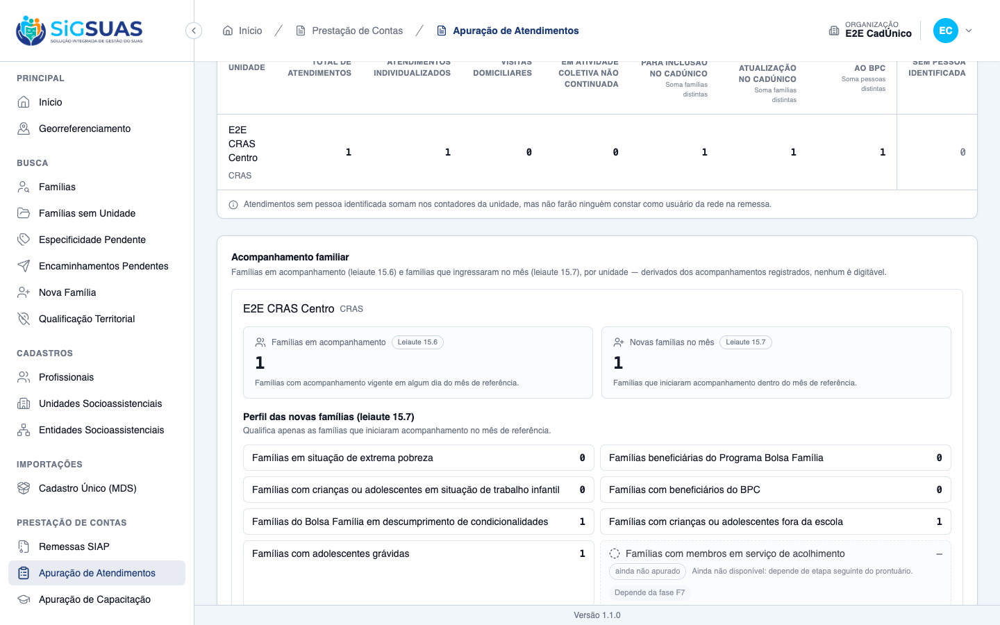
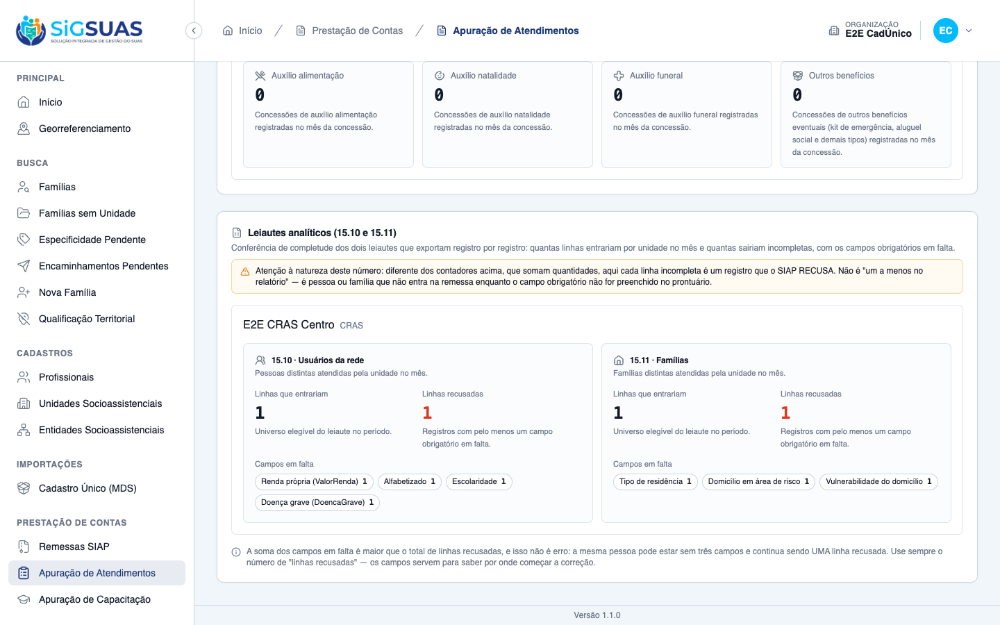
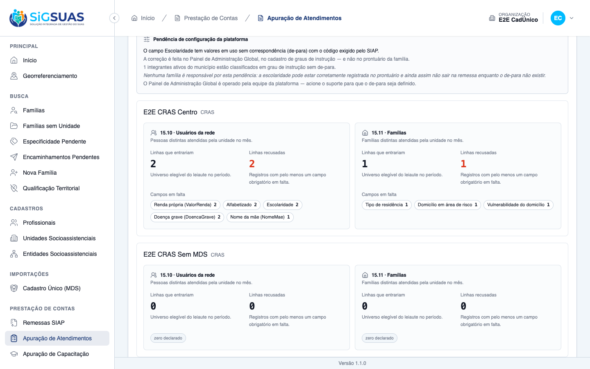

Os 14 critérios de aceite da US-DIAG-05 foram verificados. Oito têm evidência na tela da apuração, combinada com a suíte automatizada (CA01, CA02, CA07, CA08, CA09, CA10, CA11 e CA12), e seis são provados pela suíte, que tem um teste dedicado a cada um (CA03 a CA06, CA13 e CA14). Nenhum critério ficou em falta. Antes da captura foi corrigido um teste unitário desatualizado da faixa escolar (commit c2fa1ca), que falhava por chamar um método removido na correção da borda dos 4 anos. O comportamento já estava coberto pelos testes de feature, e agora os dois níveis estão verdes: 111 testes / 400 asserções nos arquivos da HU e 4934 testes, zero falhas, na suíte completa da API.
| CA | Critério | Status |
|---|---|---|
| CA01 | Três perfis acesos (happy path) | ATENDIDO · navegador + automatizado |
| CA02 | Resta um perfil indisponível | ATENDIDO · navegador + automatizado |
| CA03 | Família conta uma vez no descumprimento | ATENDIDO · automatizado |
| CA04 | Evasão derivada da situação escolar | ATENDIDO · automatizado |
| CA05 | Situação escolar não informada não conta como evasão | ATENDIDO · automatizado |
| CA06 | Gestante adulta não conta | ATENDIDO · automatizado |
| CA07 | Conferência de completude do leiaute 15.10 | ATENDIDO · navegador + automatizado |
| CA08 | Conferência de completude do leiaute 15.11 | ATENDIDO · navegador + automatizado |
| CA09 | Nome da mãe também é conferido | ATENDIDO · navegador + automatizado |
| CA10 | Grau de instrução sem de-para aponta o Painel Global | ATENDIDO · navegador + automatizado |
| CA11 | Sem dado de cidadão na tela | ATENDIDO · navegador + automatizado |
| CA12 | Correção reflete na consulta seguinte | ATENDIDO · navegador + automatizado |
| CA13 | Operacional vê apenas as suas unidades | ATENDIDO · automatizado |
| CA14 | Isolamento entre municípios | ATENDIDO · automatizado |
Critério (Gherkin): Dado que no mês o "CRAS Centro" teve novas famílias em acompanhamento, com descumprimento no período, integrante em evasão escolar e gestante adolescente Quando eu consultar a apuração do "CRAS Centro" Então os três perfis apresentam os números apurados E deixam de aparecer como indisponíveis
Como foi testado: Massa declarada (ver Observações): uma família nova em acompanhamento no PAIF do E2E CRAS Centro em 09/2026, com uma ocorrência de descumprimento em 09/2026, um integrante de 16 anos com situação escolar “não, já frequentou” e a gestação desse integrante anotada. Apuração de 09/2026 filtrada pela unidade.

Critério (Gherkin): Quando eu olhar os perfis do leiaute 15.7 Então apenas o perfil de acolhimento aparece como ainda não disponível E a tela indica que ele depende da etapa seguinte do prontuário
Como foi testado: Mesma captura do CA01.
Critério (Gherkin): Dado que uma família nova teve três ocorrências de descumprimento no mês, de dois integrantes diferentes Quando eu consultar a apuração Então ela é contada uma vez no perfil de descumprimento
Como foi testado: Critério de backend: exige massa com várias ocorrências de integrantes distintos no mesmo mês.
Evidência por cobertura automatizada — ver Anexo.
Critério (Gherkin): Dado que uma família nova tem um adolescente de 15 anos com situação escolar "não, já frequentou" Quando eu consultar a apuração Então ela é contada no perfil de evasão escolar E não houve nenhum campo perguntando se ela está em evasão
Como foi testado: Critério de backend. Na captura do CA01, o perfil “fora da escola” = 1 vem justamente de um integrante de 16 anos com “não, já frequentou”.
Evidência por cobertura automatizada — ver Anexo.
Critério (Gherkin): Dado que uma família nova tem uma criança de 9 anos sem situação escolar informada Quando eu consultar a apuração Então ela não é contada no perfil de evasão escolar E isso não significa que a criança frequenta escola
Como foi testado: Critério de backend.
Evidência por cobertura automatizada — ver Anexo.
Critério (Gherkin): Dado que uma família nova tem uma gestante de 24 anos Quando eu consultar a apuração Então ela não é contada no perfil de gravidez na adolescência
Como foi testado: Critério de backend.
Evidência por cobertura automatizada — ver Anexo.
Critério (Gherkin): Dado que pessoas foram atendidas pelo "CRAS Centro" no mês E que parte delas está sem escolaridade ou sem renda informada Quando eu consultar a apuração Então a tela informa quantas pessoas entrariam no leiaute e quantas estão incompletas E indica quais campos estão em falta
Como foi testado: Bloco “Leiautes analíticos (15.10 e 15.11)” da apuração de 09/2026, unidade E2E CRAS Centro.

Critério (Gherkin): Dado que famílias foram atendidas no mês e parte está sem as condições habitacionais informadas Quando eu consultar a apuração Então a tela informa quantas famílias entrariam incompletas no leiaute 15.11 E indica os campos em falta
Como foi testado: Mesmo bloco do CA07.
Critério (Gherkin): Dado que pessoas atendidas estão sem o nome da mãe no cadastro Quando eu consultar a conferência de completude do leiaute 15.10 Então elas constam entre as incompletas E o campo apontado é o nome da mãe
Como foi testado: Massa declarada: um atendimento em 09/2026 no E2E CRAS Centro para o integrante E2E Integrante Sem Nascimento, que não tem nome da mãe no cadastro.

Critério (Gherkin): Dado que existe grau de instrução do CadÚnico sem correspondência definida e integrantes classificados nele Quando eu consultar a conferência de completude Então a pendência aponta o cadastro de graus de instrução no Painel de Administração Global E não aponta a família como responsável pela correção
Como foi testado: Massa declarada e revertida: o de-para do grau “Superior incompleto ou mais” foi retirado e um integrante ativo foi classificado nele.
Critério (Gherkin): Dado que estou consultando a conferência de completude Quando eu olhar os resultados Então vejo quantidades e campos em falta E nenhum nome, CPF ou identificação de família
Como foi testado: Resposta real da API da apuração salva em payload-apuracao-09-2026.json e varrida em busca de dados de cidadão.
Evidência por cobertura automatizada — ver Anexo.
Critério (Gherkin): Dado que registrei os campos em falta das pessoas incompletas Quando eu consultar a apuração novamente Então elas não constam mais como incompletas
Como foi testado: Com o estado do CA09 na tela (2 recusadas), foram preenchidos renda, alfabetização, escolaridade e doença grave do E2E Integrante Local e a tela foi recarregada.
Critério (Gherkin): Dado que sou Operacional do Tenant lotado apenas no "CRAS Centro" Quando eu consultar a apuração Então vejo apenas o "CRAS Centro"
Como foi testado: Critério de backend: o Operacional semeado não tem a permissão restrita da apuração, que só chega por concessão manual.
Evidência por cobertura automatizada — ver Anexo.
Critério (Gherkin): Dado que sou usuário do município A Quando eu consultar a apuração Então vejo apenas unidades do município A
Como foi testado: Critério de backend: exige um segundo município.
Evidência por cobertura automatizada — ver Anexo.
O FollowUpProfileRangesTest falhava em 6 casos com “Call to undefined method”. O commit 1b6eee9 havia trocado schoolAgeBirthDateRange() por isSchoolAge()/ageOn() para não perder a borda dos 4 anos no SQLite, mas o teste não foi atualizado. O comportamento estava coberto e verde nos testes de feature. O teste foi reescrito contra o predicado novo, mantendo as quatro bordas e o último dia do mês, e ganhou dois casos: a data com hora e o nascimento ausente ou no futuro. Foi conferido por mutação (trocar o <= por < reprova 3 casos). O docblock que ainda citava o método removido também foi corrigido. Nenhuma regra de produção mudou.
A base não tinha família nova em acompanhamento no período. Para exercer os critérios na tela, foram gravados por script, fora da interface: um ingresso no PAIF da família E2E Família No CRAS em 02/09/2026, uma ocorrência de descumprimento em 09/2026, a situação escolar “não, já frequentou” e a gestação do integrante E2E Integrante Local (16 anos), e um atendimento em 05/09/2026 para o E2E Integrante Sem Nascimento. O de-para do grau “Superior incompleto ou mais” foi retirado e um integrante foi classificado nele. Tudo foi removido ou restaurado ao fim da captura, e a pendência de configuração desapareceu da tela depois da restauração. Como a gravação foi direta, esses registros não passaram pela trilha de auditoria.
Os cenários exatos de CA03 a CA06 (várias ocorrências de integrantes distintos, bordas de idade, situação não informada, gestante adulta) exigem massas que a base de evidência não tem, e cada um tem teste dedicado na suíte. O CA01 mostra na tela a mesma regra funcionando. O CA13 depende de um Operacional com a permissão restrita da apuração, que só chega por concessão manual (regra de uma HU anterior), e o CA14 exige um segundo município.
O anexo reúne os arquivos da HU: 111 testes, 400 asserções, todos verdes. A suíte completa da API, rodada no container depois da correção do teste, fechou com 4934 testes passando, 27 pulados e nenhuma falha.
PASS Tests\Feature\Client\AttendanceReportDiagnosisTest ✓ it acende os tres perfis do 15.7 sobre as novas familias do mes (CA… 0.75s ✓ it deixa apenas o acolhimento declarado indisponivel, apontando a F… 0.09s ✓ it conta a familia UMA vez no descumprimento, por mais ocorrencias… 0.09s ✓ it nao conta ocorrencia cancelada, de outro mes nem soft-deletada n… 0.10s ✓ it deriva a evasao escolar da situacao escolar declarada — nao exis… 0.10s ✓ it nao conta como evasao a situacao escolar nao informada, o "nao s… 0.11s ✓ it conta as bordas da faixa escolar como a spec manda: 4 anos entra… 0.10s ✓ it nao conta gestante adulta e conta a adolescente, pela idade NA D… 0.11s ✓ it confere a completude do 15.10 e mantem incomplete DIFERENTE da s… 0.12s ✓ it nao conta no 15.10 o atendimento cancelado, o de outro mes nem a… 0.10s ✓ it confere a completude do 15.11 sobre as familias atendidas no mes… 0.10s ✓ it declara ZERO para a unidade sem movimento, nunca omite o bloco (… 0.09s ✓ it conta o nome da mae ausente ou em branco entre as incompletas (C… 0.10s ✓ it aponta o Painel Global quando o grau de instrucao nao tem de-par… 0.11s ✓ it nao inventa pendencia de configuracao quando todo grau tem de-pa… 0.11s ✓ it nao leva nome, CPF, NIS nem identificador de cidadao no payload… 0.09s ✓ it reflete a correcao na consulta seguinte, sem cache a invalidar (… 0.10s ✓ it mostra ao Operacional apenas as unidades em que ele tem lotacao… 0.11s ✓ it nao deixa a conferencia de um municipio enxergar o outro (CA14/R… 0.09s PASS Tests\Unit\Enums\SiapNewFamilyProfileTest ✓ it conta SETE perfis acesos e UM apagado depois da F6 (CA01/CA02/D0… 0.01s ✓ it acende os TRES perfis da F6 e apaga o depends_on deles (D02) with dataset "descumprimento de condicionalidades" ✓ it acende os TRES perfis da F6 e apaga o depends_on deles (D02) with dataset "evasao escolar" ✓ it acende os TRES perfis da F6 e apaga o depends_on deles (D02) with dataset "gravidez na adolescencia" ✓ it mantem o acolhimento DECLARADO indisponivel, apontando a F7 (CA02) ✓ it mantem o VALOR do case como chave do payload — sem mapa intermediario PASS Tests\Unit\Services\FollowUp\FollowUpProfileRangesTest ✓ it fixa as tres constantes do D12 num lugar so ✓ it deriva as bordas DAS constantes, nunca de literais ✓ it inclui e exclui exatamente nas quatro bordas da faixa escolar (§8.2) with dataset "tres anos: pequeno demais, NAO conta" ✓ it inclui e exclui exatamente nas quatro bordas da faixa escolar (§8.2) with dataset "quatro anos EM PONTO: conta" ✓ it inclui e exclui exatamente nas quatro bordas da faixa escolar (§8.2) with dataset "dezessete anos: conta" ✓ it inclui e exclui exatamente nas quatro bordas da faixa escolar (§8.2) with dataset "dezoito anos EM PONTO: NAO conta" ✓ it anda com o periodo apurado — a faixa e resolvida no ULTIMO DIA do mes, nunca hoje ✓ it nao perde a borda dos 4 anos quando a data vem com hora, como o SQLite a grava (regressao do 1b6eee9) ✓ it nao inventa faixa sem data de nascimento nem com nascimento no futuro PASS Tests\Feature\Client\FollowUpReportServiceTest ✓ it conta as familias distintas com acompanhamento vigente em algum… 0.04s ✓ it conta o ingresso e o desligamento ocorridos no meio do mes (CA02… 0.03s ✓ it nao conta a familia desligada no mes anterior, mas conta naquele… 0.03s ✓ it conta o mes do desligamento mesmo apos a razao e o servico serem… 0.03s ✓ it conta 1 em cada unidade quando a familia e acompanhada por duas… 0.03s ✓ it conta 1 quando a familia e acompanhada em dois servicos da MESMA… 0.03s ✓ it conta as novas familias do mes (CA05) 0.06s ✓ it conta o reingresso como nova familia (CA06/I2) 0.03s ✓ it nao conta o acompanhamento cancelado em nenhum dos dois contador… 0.05s ✓ it nao conta o acompanhamento removido operacionalmente (deleted_at… 0.03s ✓ it reproduz o cenario canonico de conferencia do §9 (3 em acompanha… 0.05s ✓ it qualifica APENAS as novas familias, nunca todas as acompanhadas… 0.06s ✓ it conta a mesma familia em varios perfis — eles nao sao exclusivos… 0.04s ✓ it nao conta membro inativo nem removido no perfil de trabalho infa… 0.04s ✓ it conta o BPC mesmo com o programa inativado no catalogo global 0.04s ✓ it nao conta receives_pbf NULL e nao afirma que a familia nao receb… 0.03s ✓ it nao conta renda per capita nula em extrema pobreza (RN08) 0.04s ✓ it declara o unico perfil sem fonte, com o motivo e a fase (CA09/D0… 0.03s ✓ it sinaliza os acompanhamentos vigentes ha mais de seis meses sem a… 0.06s ✓ it conta PROCESSOS, e nao familias, no ponto de atencao (D10) 0.03s ✓ it ignora atendimento cancelado e de outra unidade no cruzamento da… 0.04s ✓ it respeita o corte configurado em follow_up.stale_months (I5/D10) 0.03s ✓ it nao sinaliza acompanhamento desligado nem cancelado no ponto de… 0.03s ✓ it devolve zero DECLARADO para a unidade sem nenhum acompanhamento… 0.03s ✓ it curto-circuita sem tocar o banco quando o recorte de unidades e… 0.03s ✓ it nao conta acompanhamento de outro municipio (RN13/CA14) 0.03s ✓ it nao persiste absolutamente nada — a apuracao e derivada (RN09/D0… 0.04s ✓ it nao devolve nenhum identificador de familia no resultado (D11/RN… 0.03s PASS Tests\Feature\Client\AttendanceReportFollowUpTest ✓ it reproduces the canonical scenario of §9 in the HTTP payload — 3… 0.10s ✓ it lights up families_in_follow_up inside counters and removes it f… 0.09s ✓ it declares the four profiles that depend on F6/F7 — never omitted,… 0.09s ✓ it keeps the single unavailable profile declared even for a unit wi… 0.08s ✓ it exposes stale_follow_ups as a quantity and the configured thresh… 0.09s ✓ it carries the threshold from config so the cut can move without a… 0.09s ✓ it shows the operator only the units of the current assignment, wit… 0.09s ✓ it never counts follow-ups of another organization in any of the ne… 0.09s ✓ it persists absolutely nothing — identical row counts before and af… 0.09s ✓ it never leaks any citizen data through the new follow-up fields (D… 0.09s ✓ it never counts a cancelled follow-up in the HTTP payload (CA11/RN1… 0.09s ✓ it keeps the new blocks consistent when the report is narrowed to a… 0.09s PASS Tests\Feature\Api\Client\AttendanceReportTest ✓ it derives the four counters per unit and the total includes types… 0.10s ✓ it declares an empty unavailable_counters list — F5 lit the last re… 0.09s ✓ it excludes cancelled attendances from the report while they remain… 0.12s ✓ it counts a retroactive attendance in the month it happened, not th… 0.10s ✓ it reflects a type correction on the next query and stores nothing… 0.10s ✓ it reports attendances without an identified person separately, via… 0.10s ✓ it scopes the Operacional to units with an assignment in force TODA… 0.11s ✓ it shows the master every unit of the tenant, and a unit without mo… 0.09s ✓ it never leaks citizen data in the serialized payload — no name, no… 0.10s ✓ it keeps counting past attendances of a type inactivated in the Glo… 0.10s ✓ it narrows the report to a single unit when social_unit_uuid is giv… 0.09s ✓ it keeps unit_count at the Operacional full scope when filtering on… 0.10s ✓ it rejects with a named 422 a unit outside the user scope — never a… 0.10s ✓ it rejects an out-of-range reference month with the SIAP named mess… 0.09s ✓ it denies the Operacional without the manual grant — the restricted… 0.09s ✓ it denies a granted user without an ACTIVE professional bond in the… 0.10s ✓ it lights the three referral counters with distinct families and pe… 0.11s ✓ it counts the same family ONCE with two inclusion referrals in the… 0.10s ✓ it counts two distinct people of the SAME family in the BPC counter… 0.10s ✓ it counts the family once in EACH counter — distinct per counter, n… 0.09s ✓ it drops a cancelled referral from the counters while it stays visi… 0.11s ✓ it keeps counting a referral whose outcome became not_attended — th… 0.10s ✓ it counts a retroactive referral in the month it was made, not the… 0.10s ✓ it keeps counting past referrals of a code inactivated in the Globa… 0.09s ✓ it keeps counting past referrals of a code SOFT-DELETED in the Glob… 0.10s ✓ it declares zero on the three referral counters for a unit without… 0.09s ✓ it never feeds the BPC counter from a referral row without a person… 0.09s PASS Tests\Unit\Siap\FamiliaLayoutTest ✓ it converts the zero-padded code to the Manual numbering (15.11) wi… 0.01s ✓ it converts the zero-padded code to the Manual numbering (15.11) with dataset "Outros 000 -> 0" ✓ it converts the zero-padded code to the Manual numbering (15.11) with dataset "Situação de rua 001" ✓ it converts the zero-padded code to the Manual numbering (15.11) with dataset "Sem especificidades" ✓ it converts the zero-padded code to the Manual numbering (15.11) with dataset "já sem padding" ✓ it converts the zero-padded code to the Manual numbering (15.11) with dataset "nulo continua nulo" ✓ it converts the zero-padded code to the Manual numbering (15.11) with dataset "vazio continua nulo" ✓ it returns an INTEGER zero for 000 — never an empty string nor null ✓ it no longer lists any field without source (HU #10621 + US-DIAG-05) ✓ it declares pending COMPOSITION — never no_data_source — now that every field has a source (§7.4) Tests: 111 passed (400 assertions) Duration: 7.55s